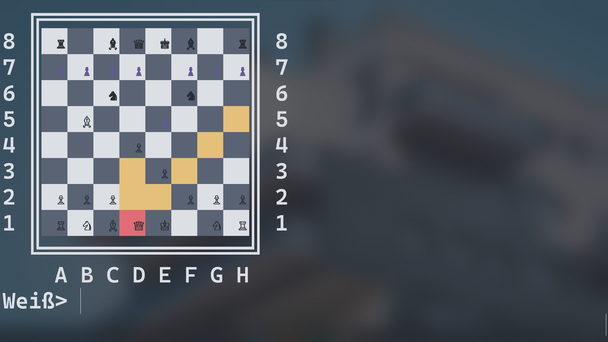

Marvin
Hey! Wie auch immer Du dich auf diese Website verirrt hast: Herzlich willkommen!
Erst mal ein paar Fakten über mich. Ich bin 19 Jahre alt, komme aus Freiburg im Breisgau und habe dieses Jahr mein Abitur gemacht. Deshalb habe ich nun auch endlich wieder mehr Zeit, mich meinen vielen Softwareprojekten zu widmen!
Wenn ich gerade mal nicht vor meinem PC sitze, bin ich auch gerne mal Fotograf.Mein Instagram aber, auf dem ich meine Fotos dann hochlade, ist gerade leider inaktiv (hoffentlich nicht mehr lange!). Ansonsten habe ich auch schon das ein oder andere amateurhafte Filmprojekt gemacht. Wenn Du dir das anschauen möchtest, findest du sie auf meinem YouTube.
Programmieren zu können hat mich schon immer fasziniert. Seit ich im Informatikunterricht der Mittelstufe das erste Mal damit in Kontakt kam, habe ich nicht mehr aufgehört. In der Retroperspektive kann ich sagen: Es ist nicht so schwer zu lernen, wie gedacht! Mein erstes Projekt, eine Android Bestell-App für die Bar auf einem Geburtstag, war vielleicht noch nicht schön gestaltet oder programmiert, aber sie hat ihren Zweck erfüllt. Über die Jahre hat sich die Qualität mit zunehmenden Projekten und Erfahrung verbessert. Auf meinem GitHub findest Du alle meine Projekte, darunter ein Schachalgorithmus, ein anpassbarer Logger für .Net oder eine Website, die Sortieralgorithmen visualisiert.
Ich hoffe, über diese Website bekommst Du einen Eindruck von mir und meiner Arbeit, über info@marvin-fuchs.de kannst Du mich gerne Kontaktieren!

GameSense
GameSense API von Steelseries für .Net Framework. Bietet über der API hinaus auch Implementierungen für Animationen und Events.

chess_ai
Eine Schach KI. Nutzt den MinMax Algorithmus und Alpha-Beta Pruning für die Suche des besten Zuges!

SharpLog
Ein Konsolen-Logger für große Projekte in .Net Framework.

Sort
Eine Website, auf der Sortier-Algorithmen visualisiert werden. Nutzt svg.js.

Meine Website
Meine persönliche Website. Ein Langzeitprojekt, das immer mal wieder verändert wird!

Pong
Pong auf einem selbst gemachtem LED-Display. Läuft auf einem Arduino.